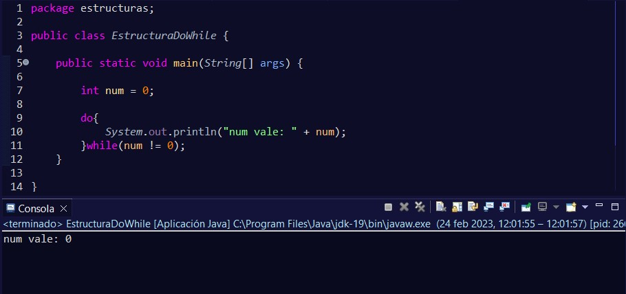

Este método, nos permite ejecutar el código al menos una vez se cumpla o no la condición. Después, si no se cumple, éste terminará.
Pero al igual que ocurría con el bucle while, estos métodos tienen la importancia de que se utilizan cuando se desconoce concretamente cuándo va a dejar de repetirse. El caso más habitual, es pedirle al usuario algún dato y mientras se cumpla la condición, que éste se ejecute.